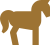
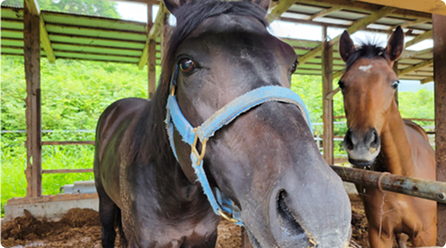
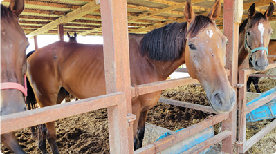
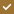

2026.02.01
Event令和7年 見学会＆懇談会イベントのお知らせ


Retouch（リタッチ）とは、引退した競走馬たちが肥育場（肉にするために肥らせる場）で過ごしている馬たちを保護し、乗馬をはじめ教育・観光・福祉の分野で活躍できる機会を提供することを目的とした引退競走馬の支援団体として活動を行っています。また、Retouch（リタッチ）という名称は、 「（馬に）再び手を差しのべる＝リタッチ」という意味を込めて名付けられました。
競走馬として活躍しているサラブレッドは、食用として飼育される動物とは性質が異なり、競走馬は血統や配合を考え「走らせるために産ませてきた」という背景に、人間の都合や期待が大きく関わっているものと承知しています。
そのため、走るというフィールドだけで、その結果を残せなかった馬たちが、もう必要ないから「肉にされる」という現実は、本当に心が痛むものです。例え、早く走れなくても
「乗馬の楽しさを私たちに提供できる馬」「馬術競技馬としてのセンスを持つ馬」「ホースセラピーや観光乗馬に最適な馬」など、馬の個性や特性を伸ばしそれを評価すれば必ず生きていく道は広がっていくと私たちは考えています。
競走馬に関わる生産者、育成スタッフ、騎手、厩務員、調教師など、第一線で働く人々の多くは、馬への深い愛情を持ってこの仕事に携わっている方がほとんどで、馬を「肉にする」ことを望んでいる人などいません。確かに、馬の命の最終的な判断と責任は馬主にあります。しかし、それを馬主だけの責任にするのではなく、競馬という産業を支え、楽しんできた社会全体で、引退した馬たちの命を守る仕組みを築くべく、このRetouch活動を通じて皆様と共に、 『引退馬の保護』の必要性を社会に呼びかけていくことが大切だと考えています。
「馬を癒すことによって、私たちが逆に馬から癒されている」「私たちが馬に教えていると思っている間に、実は馬たちから多くのことを学んでいる」という体験は、日々の中で多くあります。誰かのため、何かのために行うという事ではなく、 お互いが「今を生きるために支えあう事を共感」し合えることこそ、このRetouch（リタッチ）活動を通じて、共感して頂ける皆様と共に、命に寄り添いながら、これからも活動を続けていきます。皆様と一緒に、この活動を広めていきながら、＂引退馬の行く末＂＂引退競走馬の余生＂が、馬たちにとって安心できるものになるまで、Retouch（リタッチ）活動は進めます。


現在、Retouchに所属する馬たちへの支援口数に基づいて、ランキング形式で公開しています。
これにより、支援者の皆様がどの馬にどれだけ支援が集まっているかを確認でき、支援の輪が広がる仕組みになっています。
支援お願いランキングは、支援口数が少ない馬ですので、是非、一口支援のご協力をお願いいたします。
一口支援のお申込みは、 こちらのページをご参照ください。
No.4
No.5
Retouchは、保護された動物たちが安心して暮らせる環境を整え、彼らの命の尊厳を守るために活動しています。私たちは、動物たちの「もう一度生きるチャンス」を支えるために、日々現場で奮闘しています。この活動は、皆さまからの温かなご支援によって支えられています。
（継続的なご支援）
毎月定額でご支援いただく方法です。
継続的なご支援は、動物たちの医療費や飼育環境の維持、緊急保護への対応など、安定した活動の基盤となります。

月額１口12,000円〜（複数口のご支援も可能です）引退馬の保護活動にご賛同いただける皆様に向けて、入会金無料で以下の3種類のメンバー制度をご用意しています。 （※すべての会員種別で特に特典内容等に差はありません。）
（その都度のご支援）
団体名
引退馬支援団体 Retouch（リタッチ）
代表者
野口 佳槻（のぐち よしき）
設立
令和5年11月（代表交代に伴い再始動）
連絡先
TEL 050-6875-3336
（リタッチ担当者をお呼び出しください）
所在地
〒586-0031 大阪府河内長野市高向2001 ホースレスト内
活動拠点
千葉県八街市・山武市／大阪府河内長野市
（※山武市雨坪10番地 東関東馬事高等学院内）
Retouchは、引退した競走馬たちが肥育場で食肉用として過ごす現実に対し、「命をつなぐ」ことを目的とした支援団体です。競馬の舞台を退いた馬たちが、再び人と共に生きる道を歩めるよう、以下の取り組みを行っています。
Retouchでは、引退競走馬の多くが肥育場に送られている現実を広く認知してもらうため、以下の活動も行っています。
Retouchの活動に関する取材・掲載をご希望の方は、上記の連絡先までご連絡ください。
写真・動画素材の提供、代表インタビュー、施設見学などもご相談可能です。
引退馬保護 Retouch事務局
営業時間 : 11：00～16：00
TEL : 050-6875-3336